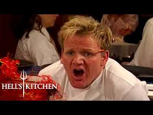

Slow-Cooked Fiery Lamb

Description
Named after one of the most memorable (and quotable) moments from Hell's Kitchen, this vibrant, herbaceous blend is full of mint, tarragon, chives, rosemary, oregano, marjoram and parsley. Add a delicious dose of sweet balsamic and molasses and you'll be putting this on everything… but we say start with lamb.
Ingredients
- 4 lamb shanks
- Olive oil, for frying
- 2 carrots, peeled and sliced
- 1 onion, peeled and thickly sliced
- 2 bay leaves
- 1 x 750ml bottle red wine
- 500ml chicken stock
- Small handful of mint leaves, to garnish
For the marinade
- 1–2 green chillies, deseeded and sliced, to taste
- 1–2 red chillies, deseeded and sliced, to taste
- 2 tsp smoked paprika
- 2 tsp dried oregano
- 1 tsp cumin seeds
- 2 cinnamon sticks, snapped in half
- 3 garlic cloves, peeled, roughly chopped and crushed
- Olive oil
- Sea salt and freshly ground black pepper
Steps
- First prepare the marinade. Mix the chillies (use only one of each if you don’t like hot dishes), smoked paprika, oregano, cumin seeds, cinnamon sticks, garlic, 1 tablespoon of olive oil and seasoning together. Rub the mixture into the lamb so that it is well flavoured. You can cook the lamb straight away, but if you have time, cover and leave to marinate for at least 1 hour, or even overnight.
- Preheat the oven to 160°C/Gas 3.
- Heat a large casserole dish on the hob and add a couple of tablespoons of olive oil. Brown the lamb in it for about 6 minutes until coloured on all sides, then add the chillies and cinnamon from the marinade.
- Add the carrots, onion and bay leaves to the casserole and brown for a minute or two. Lift the lamb so that it is resting on top of the onions and carrots. Add the red wine to deglaze the pan, scraping up the bits from the bottom, then bring to the boil and cook for 7–8 minutes to reduce the liquid by half. Add the chicken stock, bring to the boil, then transfer, uncovered, to the preheated oven. Cook for 3 hours until the meat is really tender and the sauce reduced. (If the tops of the shanks look like they might be drying out, just baste and occasionally turn them.)
- Remove the cooked meat from the oven and serve garnished with torn mint leaves and the cooking juices spooned on top.